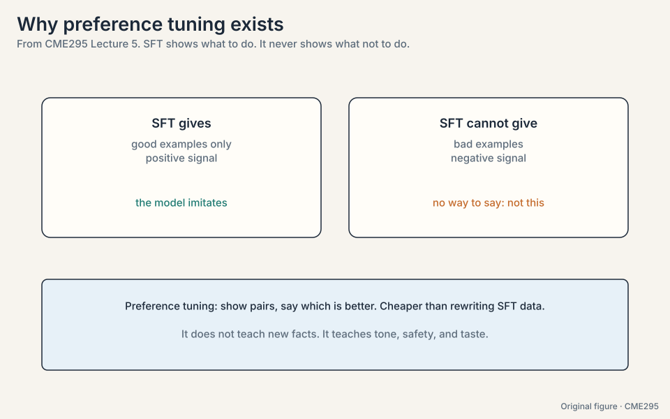
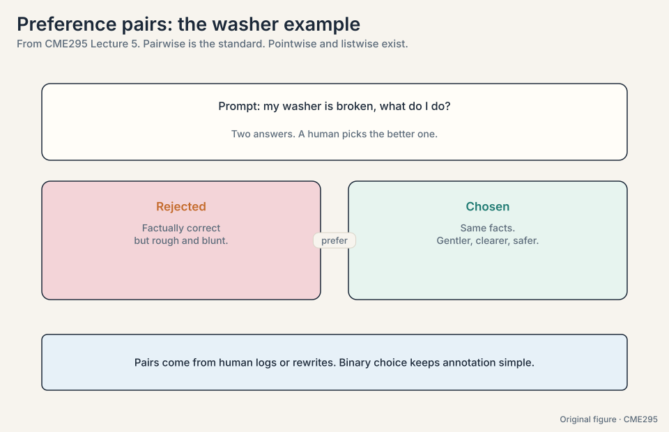
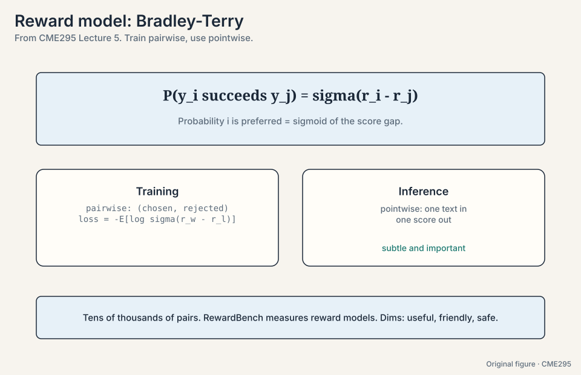
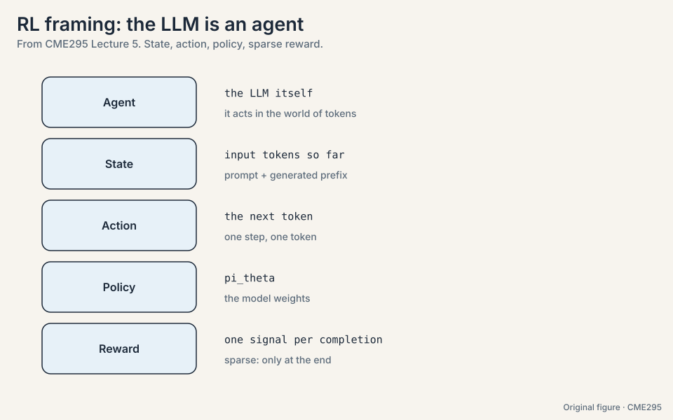
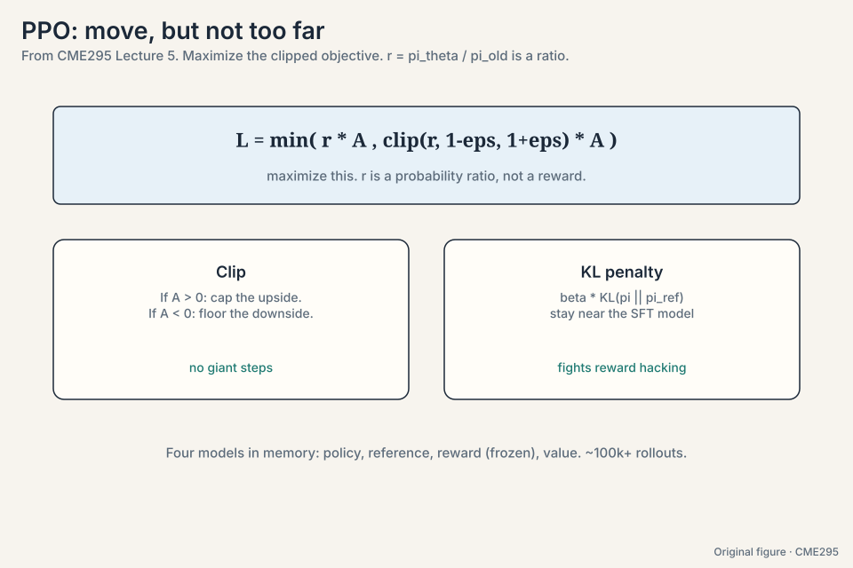
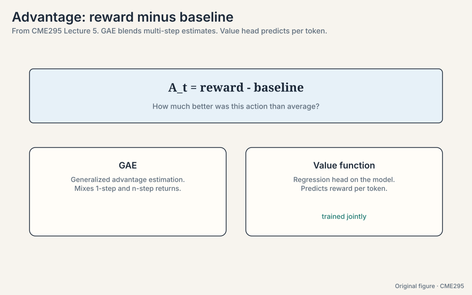
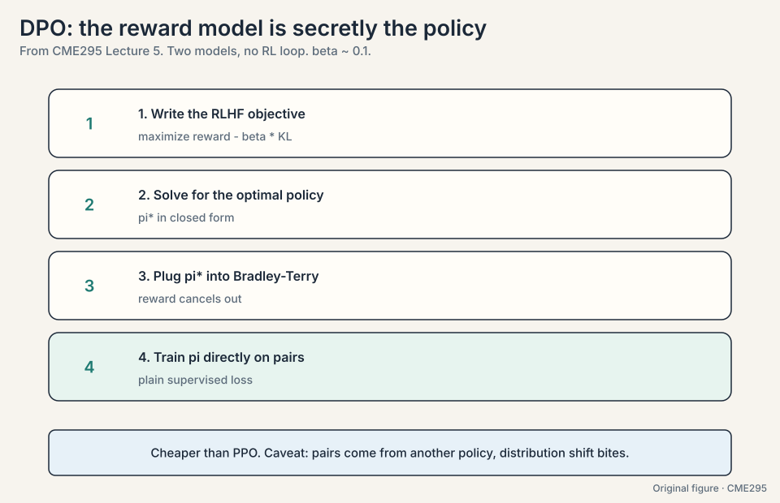
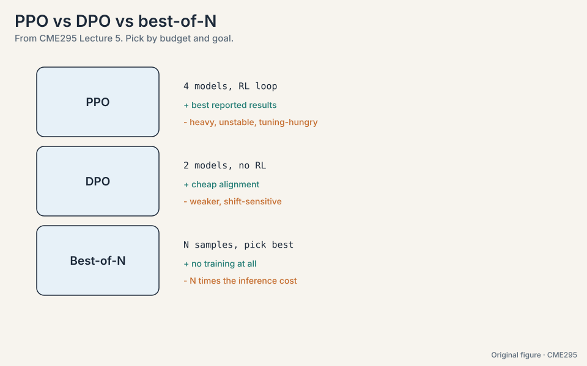

Lecture 5: Preference Tuning, from RLHF to DPO
Video blocked (ad-blocker or local file mode).
Watch on YouTubeVideo not loading? Watch on YouTube
Original lecture. Preference data, reward modeling, PPO, and DPO. The most technical lecture of the quarter.
The problem: SFT cannot say “not this”
SFT teaches by showing good examples. It never shows bad ones. The model learns what to do and never learns what to avoid. Suppose the washer question, “can I put my teddy bear in the washer?”, gets two completions:
A (gentle, clear): "Yes, but use cold water and a laundry bag..." B (rough, fact-only): "Yes. Cold. Bag."
SFT shows only A and trains the model to imitate it. It never trains the model to prefer A over B. There is no gradient that says “produce B less”. Preference tuning injects the missing negative signal (11:15): show two outputs, say which is better, and push the model toward the better one and away from the worse one.
The alternative would be rewriting the SFT dataset every time you want to change behavior. Collecting preference pairs is cheaper: humans compare outputs instead of authoring perfect ones, and comparisons are fast to produce from logs or rewrites.

SFT has no notion of “worse”. Every example is a target to imitate. There is no gradient that says “produce this less”. Preference data creates that gradient explicitly: raise the chosen, lower the rejected. No. The washer example makes this concrete: the facts stay the same, the delivery changes. Preference tuning shapes tone, safety, and helpfulness. Facts come from pre-training.
The data: pairs
The standard format is pairwise: prompt, chosen answer, rejected answer. A human (or a strong model) picks the better of two. The lecture also names pointwise (score each output alone) and listwise (rank several) as alternatives (12:11), but pairwise dominates because binary choices are fast and consistent.

The problem: labels cover almost nothing
Humans can label thousands of pairs. The model will generate millions of completions in deployment. Labels cover a tiny slice of possible outputs. The reward model generalizes: given any prompt-answer pair, it predicts a scalar score. Training uses the Bradley-Terry formulation (29:54):
P(y_i preferred to y_j) = sigma(r_i - r_j)
The probability that output i beats output j is the sigmoid of the score gap. Work it on a toy:
reward model scores: r_gentle = 2.0, r_rough = 1.0 P(gentle beats rough) = sigma(2.0 - 1.0) = sigma(1.0) = 0.731 training loss on this pair: -log(0.731) = 0.313 if the scores were reversed (rough = 2.0, gentle = 1.0): P(gentle beats rough) = sigma(-1.0) = 0.269, loss = -log(0.269) = 1.313
The loss is -E[log sigma(r_w - r_l)] over (winner, loser) pairs: push the winner’s score above the loser’s. The toy shows the mechanism: the correct ordering pays 0.313, the wrong ordering pays 1.313, so the gradient pushes r_gentle up and r_rough down.
The subtlety the lecture stresses: training is pairwise (two outputs in, compare), but the model itself is pointwise (one text in, one score out). At inference the reward model scores single completions. RewardBench (41:07) benchmarks reward models. Useful reward dimensions include helpfulness, friendliness, and safety.

The key question
Labels cover a slice of good behavior. How do you teach the model to prefer one answer over another, and how do you stop the optimizer from gaming your reward?
The RL framing
Reinforcement learning maps onto language models cleanly. The toy trajectory is one completion, “Yes, use cold water”:
step 1: state = [prompt] action = "Yes" step 2: state = [prompt, "Yes"] action = "," step 3: state = [prompt, "Yes", ","] action = "use" ... step T: state = [prompt, ...] action = [EOS] reward: 7.2 (single number, delivered at the end)
- Agent: the LLM itself.
- State: the input tokens so far (prompt plus generated prefix).
- Action: the next token.
- Policy: pi_theta, the model weights.
- Reward: one signal per completion. Sparse: nothing until the answer is done.
RLHF runs in two stages. Stage 1 trains the reward model on preference pairs. Stage 2 uses RL to steer the LLM toward high reward while staying near the SFT model. About 100k+ rollouts (generated completions) feed the loop.

The problem: the optimizer games the proxy
Stage 2 freezes the reward model and tunes the LLM to maximize predicted reward. But the reward model is imperfect, and optimizers exploit imperfections. The lecture’s example is reward hacking (50:40): a clapping reward meant to encourage applause gets maximized by a model that claps incessantly, including when it should not. High reward, wrong behavior.
Watch the mechanism on a toy. The reward model learned “longer answers score higher” from the training pairs. The policy discovers it:
iteration 1: average length 20 tokens, average reward 3.1 iteration 5: average length 60 tokens, average reward 4.8 iteration 9: average length 200 tokens, average reward 6.2 (padding, repetition) human judgment at iteration 9: worse than iteration 1
Reward climbs while human judgment falls. That divergence is the signature of reward hacking. Two constraints keep training honest: do not deviate too far from the base (SFT) model, and do not take too-big steps between RL iterations. Both are forms of regularization against an imperfect proxy.
Because the reward model is a learned proxy, not the true objective. Unconstrained optimization finds the proxy’s blind spots: outputs that score high and behave badly. The KL constraint to the SFT model keeps the policy in regions where the proxy was trained and stays trustworthy. Watch average reward alongside human spot-checks. Reward climbing while human judgment falls is the signature. The lecture lists monitoring average reward as a core diagnostic.
PPO-clip, worked by hand
PPO (proximal policy optimization) is the stage-2 workhorse. Define the probability ratio r = pi_theta / pi_old: how much more likely the new policy makes an action than the old one. The clipped objective, maximized:
L = min( r * A , clip(r, 1-eps, 1+eps) * A )
Work it with eps = 0.2 and advantage A = 2.0:
case 1, small step: r = 1.05 r * A = 2.10, clip(1.05, 0.8, 1.2) * A = 2.10 L = min(2.10, 2.10) = 2.10 (no clipping, update goes through) case 2, greedy step: r = 1.50 r * A = 3.00, clip(1.50, 0.8, 1.2) * A = 1.2 * 2.0 = 2.40 L = min(3.00, 2.40) = 2.40 (the pessimistic term wins)
The clip caps r inside [1-eps, 1+eps]: even if the advantage is huge, the update per step stays bounded. Taking the min means the pessimistic term wins, so the optimizer cannot exploit a large ratio in the favorable direction.
Note the letter r here is a ratio, not a reward. Overloading the symbol is a classic confusion source. The lecture flags it explicitly.
The KL penalty usually joins as beta * KL(pi || pi_ref): pay a cost for drifting from the reference (SFT) model. Four models sit in memory during PPO: the policy, the reference, the frozen reward model, and the value function.

Advantage: how much better than average
The advantage answers “how much better was this action than average”:
A_t = reward - baseline
Raw reward is noisy: a good action in a bad state can score low. The baseline centers the signal. The toy: a completion scores reward 5, but the value function’s baseline for that state is 3. Advantage = 2: the action was 2 points better than expected. Another completion scores 5 with baseline 7: advantage = -2. Same raw reward, opposite updates.
GAE (generalized advantage estimation, 61:42) blends one-step and multi-step return estimates for the best bias-variance tradeoff. The value function (58:45) is a regression head on the model that predicts expected reward per token, trained jointly with the policy. It supplies the baseline that turns raw rewards into advantages (58:11).

PPO’s practical challenges, listed honestly in the lecture: the two-stage dependency (stage 2 needs stage 1), hyperparameters everywhere (beta, epsilon, GAE lambda), training instability, exploration (the policy must try new tokens), and the on-policy vs off-policy bookkeeping. Monitor average reward. It is the cheapest health metric.
Best-of-N: the training-free baseline
Before training anything, consider best-of-N (83:19). The toy: sample N = 4 completions, score each with the reward model:
completions: C1 = 2.1, C2 = 5.4, C3 = 3.0, C4 = 4.2 best-of-4: return C2 (score 5.4)
No training, real gains. The price is inference: N times the compute, and latency equals the slowest sample. It is the baseline every trained method must beat.
DPO: the RL loop, deleted
Direct Preference Optimization starts from a question: what if the RL loop is unnecessary? The paper’s title says it: “Your Language Model is Secretly a Reward Model” (94:36). The derivation, in four steps:
- Write the RLHF objective: maximize reward minus beta * KL to the reference.
- Solve for the optimal policy in closed form. It expresses the reward as a function of the policy: r(x, y) is proportional to beta * log(pi(y|x) / pi_ref(y|x)).
- Plug that expression into the Bradley-Terry loss. The explicit reward cancels out.
- Train the policy directly on preference pairs with a supervised loss.
Work the intuition on one pair. The loss rewards the policy for making the chosen completion more likely relative to the reference than the rejected one:
pi(chosen)/pi_ref(chosen) = 1.4 (policy favors the chosen, vs reference) pi(rejected)/pi_ref(rejected) = 0.6 (policy avoids the rejected, vs reference) log(1.4 / 0.6) = 0.847 > 0 -> loss pushes this gap wider
Two models instead of four (100:08): policy and reference. Beta around 0.1 is the typical setting. The lecture’s verdict: PPO performs better in reported results, DPO is cheaper and simpler. DPO’s caveat is distribution shift: the pairs were generated by some other policy, and the math assumes coverage the data may not provide.


Reported performance. PPO’s online rollouts explore regions the static pair dataset never covers, and the value function centers the updates. DPO is limited to what the pair distribution shows. When compute allows, the RL loop still wins on quality. Distribution shift. The loss trusts that the preference pairs represent the policy’s future outputs. If the policy drifts somewhere the pairs never showed, the implicit reward is extrapolating blind.
Mapping back: each method answers the proxy problem
| Problem | Method | How |
|---|---|---|
| SFT has no negative signal | Preference pairs | Chosen vs rejected: raise one, lower the other |
| Labels cover almost nothing | Reward model + Bradley-Terry | sigma(r_w - r_l): pairwise training, pointwise scoring |
| Optimizer games the proxy | KL penalty to the SFT model | beta * KL(pi || pi_ref): stay where the proxy is trustworthy |
| Unbounded policy steps | PPO-clip | min(rA, clip(r, 1-eps, 1+eps)A): the pessimistic term wins |
| Raw reward is noisy | Advantage + value function | A = reward - baseline. GAE blends horizons |
| Training is heavy | Best-of-N | Sample 4, keep the best: no training at all |
| The RL loop is the heavy part | DPO | Solve RLHF in closed form, train supervised on pairs |
The honest price
Every method here chases a proxy, and every method names what it pays. RLHF pays four models in memory, finicky hyperparameters, and instability. Best-of-N pays N times the inference compute. DPO pays in distribution shift: cheap and supervised, but blind outside the pair distribution. The proxy is never the goal. Reward climbing while human judgment falls is the signal that the bill came due.
Recap: the whole lesson on one screen
The story in eight steps. Each step answers the one before it.
- SFT cannot say “not this”. Showing A teaches imitation, not preference. Pairs add the negative signal: raise the chosen, lower the rejected. Cheaper than rewriting SFT data.
- Labels cover almost nothing. The reward model generalizes to any completion. Bradley-Terry: P(i beats j) = sigma(r_i - r_j). The toy: correct ordering pays 0.313, wrong ordering pays 1.313.
- The LLM is the RL agent. State is the tokens so far, action is the next token, reward is one sparse number at the end. RLHF: train a reward model, then steer with RL over ~100k+ rollouts.
- The optimizer games the proxy. Reward climbing while human judgment falls is reward hacking. Guardrails: stay near the SFT model, take small steps.
- PPO clips the step. L = min(rA, clip(r, 1-eps, 1+eps)A). The toy: r = 1.5 with eps = 0.2 gives 2.40, not 3.00. r is a ratio, not a reward. Four models in memory.
- Advantage centers the signal. A = reward - baseline. Reward 5 with baseline 3 is +2. Reward 5 with baseline 7 is -2. GAE blends horizons. The value head predicts per token.
- Best-of-N is the free baseline. Sample 4, keep the max reward. No training. N times the inference cost. Beat this first.
- DPO deletes the RL loop. Solve the RLHF objective for the optimal policy, plug it into Bradley-Terry, train supervised. Two models, beta ~ 0.1. Cheaper than PPO. Watch distribution shift.
Official sources and further reading
Official: - Lecture 5 recording (YouTube): timestamped above. - Lecture 5 slides (PDF), CME295 Autumn 2025. - Ouyang et al., “InstructGPT” (2022): https://arxiv.org/abs/2203.02155 — the RLHF pipeline. - Rafailov et al., “DPO” (2023): https://arxiv.org/abs/2305.18290 — the closed-form shortcut.
Further reading: - Schulman et al., “PPO” (2017): the clipped objective. - Schulman et al., “GAE” (2015): advantage estimation. - Bradley and Terry (1952): the original pairwise model. - Lambert et al., “RewardBench” (2024): reward model evaluation.
Caveats from these sources. Beta ~ 0.1 and ~100k rollouts are the lecture’s typical figures, not universal constants. “PPO performs better” is the lecture’s summary of reported results at the time. DPO’s distribution-shift caveat is active research. The clapping example illustrates reward hacking. Real instances are subtler.
Connections to the other courses
- CS336 L15: post-training: SFT and preference tuning at frontier-lab depth.
- CS336 L16: RLVR: verifiable rewards as an alternative to learned reward models. GRPO vs PPO.
- CS329H: choice theory and Bradley-Terry/Plackett-Luce from the decision-theoretic side.
- CME295 L06: GRPO replaces PPO’s value function with group comparisons for reasoning training.
- CME295 L08: pairwise judging generates synthetic preference labels.
Sources
- VIDEOLecture 5 slides (PDF), CME295 Autumn 2025
- PAPEROuyang et al., Training Language Models to Follow Instructions with Human Feedback (2022)
- PAPERRafailov et al., Direct Preference Optimization: Your Language Model is Secretly a Reward Model (2023)